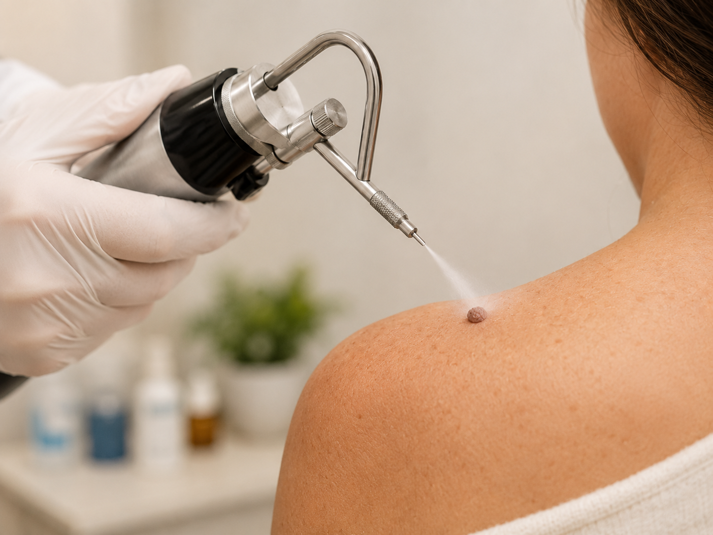
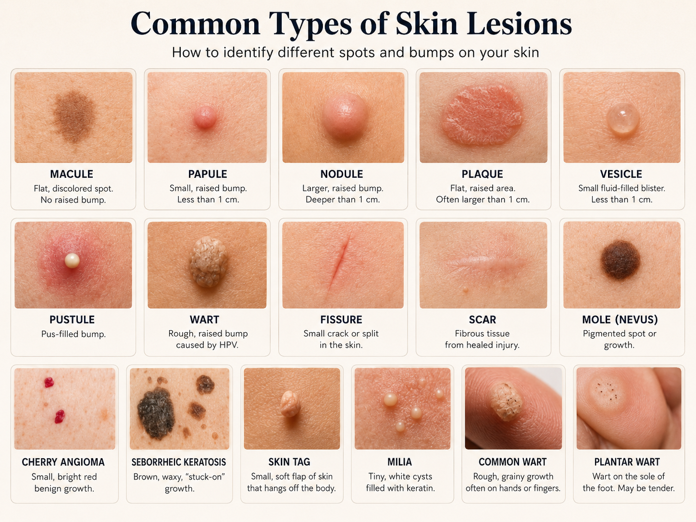
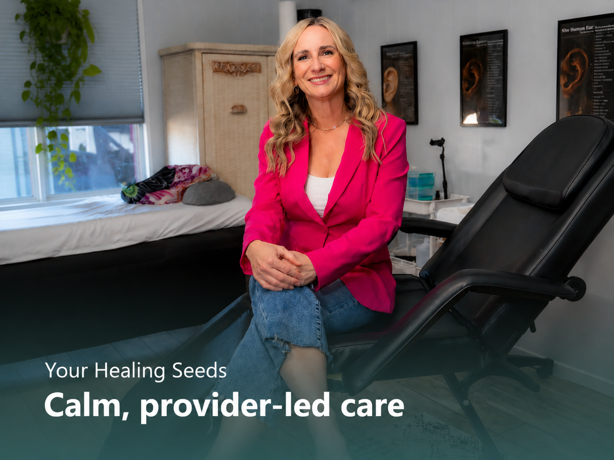

What Is Cryotherapy?
Cryotherapy uses controlled cold on select superficial skin concerns after a provider review. Mandy first determines whether treatment is appropriate or whether referral is recommended.
Provider-reviewed cold therapy for appropriate benign skin concerns, with clear expectations and aftercare guidance.


Cryotherapy uses controlled cold on select superficial skin concerns after a provider review. Mandy first determines whether treatment is appropriate or whether referral is recommended.
Many visits are brief and can be completed in office. You will receive clear instructions for what the area may look and feel like as it heals.

Call or text Mandy to book Cryotherapy, ask questions, or make sure this is the right fit.